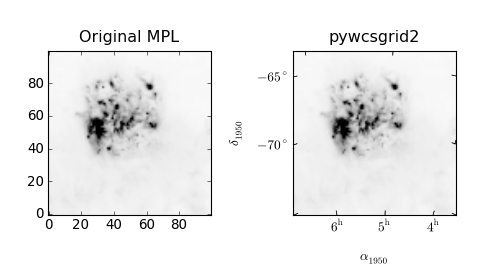
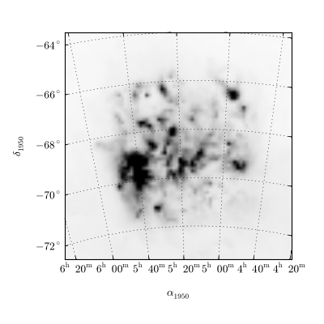
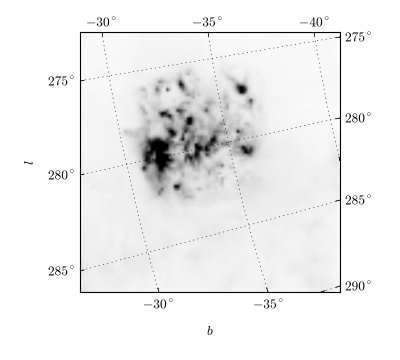
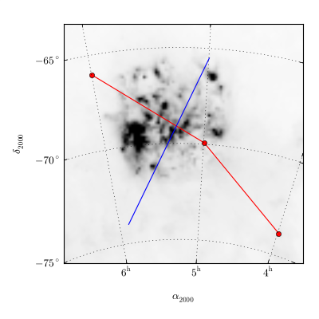
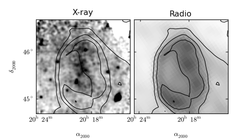
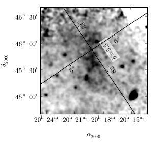

pywcsgrid2 is a python module to be used with matplotlib for displaying astronomical fits images. While there are other tools for a similar purpose, pywcsgrid2 tries to extend the functionality of matplotlib, instead of creating a new tool on top of the matplotlib. In essence, it provides a custom Axes class (derived from mpl’s original Axes class) suitable for displaying fits images. Its main functionality is to draw ticks, ticklabels, and grids in an appropriate sky coordinates. You require pyfits and kapteyn package installed, in addition to matplotlib (you need to use svn version).
You read in the fits file using pyfits and create a subplot (or axes) using pywcsgrid2’s subplot command with its header (wcs) information.
import pyfits
import matplotlib.pyplot as plt
f = pyfits.open("data/lmc.fits")
h, d = f[0].header, f[0].data
# image display with mpl's original subplot(axes)
plt.subplot(121)
plt.imshow(d, origin="lower")
# image display with pywcsgrid2
import pywcsgrid2
pywcsgrid2.subplot(122, header=h)
plt.imshow(d, origin="lower")
[source code, hires.png, pdf]
pywcsgrid2.subplot creates an instance of the pywcsgrid2.Axes class, which is derived from mpl’s Axes but draws ticks in proper sky coordinate. Note that the data coordinate of the AxesWcs axes is the image (pixel) coordinate ((0-based!) of the fits file. Only the ticklabels are displayed in the sky coordinates. For example, xlim and ylim needs to be in image coordinates (0-based).
ax = pywcsgrid2.axes([0.1, 0.1, 0.8, 0.8], header=h)
# viewlimits in image coordinate
ax.set_xlim(6, 81)
ax.set_ylim(23, 98)
As in the MPL, the grid method draws grid lines. It will draw curved grid lines using the given wcs information. Note that the ticks are also rotated accordingly.:
ax.grid()
You can not use the mpl methods like set_ticks. Instead, you need to change the wcsgrid parameters associated. For example, to set the approximate number of ticks in each axis,
# change grid density
ax.update_wcsgrid_params(label_density=[4,3])
[source code, hires.png, pdf]
Custom tick location is not currently (but will be) supported.
You can change the displayed sky coordinate (i.e., coordinates for ticks, ticklabels and grids). For example, to display the Galactic coordinate system:
ax.set_display_coord_system("gal")
The coordinate system must be one of “fk4”, “fk5”, or “gal”. Sometimes, you will need to swap the axis for better tick labeling (i.e., xaxis display latitude and yaxis display longitude).
ax.swap_tick_coord()
The pywcsgrid2.Axes class is derived from the mpl_toolkits.axes_grid.axislines.Axes. For example, to turn on the top and right tick labels,:
ax.axis["top"].major_ticklabels.set_visible(True)
ax.axis["right"].major_ticklabels.set_visible(True)
[source code, hires.png, pdf]
Again, the data coordinate of pywcsgrid2.Axes is a pixel coordinate (0-based) of the fits header (or any equivalent wcs information). For plot something in sky coordinate, you may convert your data into pixel coordinates, or you may use parasites axes (from mpl_toolkits.axes_grid) which does that conversion for you. For example, ax["fk5"] gives you an Axes whose data coordinate is in fk5 coordinate (available coordinates = “fk4”, “fk5”, “gal”). Most (if not all) of the valid mpl plot commands will work. The unit for the sky coordinates are degrees.:
# (alpha, delta) in degree
ax["fk4"].plot([x/24.*360 for x in [4, 5, 6]],
[-74, -70, -66], "ro-")
# (l, b) in degree
ax["gal"].plot([(285), (276.)],
[(-30), (-36)])
[source code, hires.png, pdf]
Instead of string (“fk4”, “fk5”, “gal”), you can use other pyfits header instance. The returning axes has a data coordinate of the pixel (image) coordinate of the given header.
Most of plot commands (other than image-related routine) will work as expected. However, displaying images in other wcs coordinate system needs some consideration. You may simply use imshow
f2 = pyfits.open("another.fits")
h2, d2 = f2[0].header, f2[0].data
ax[h2].imshow(d2)
This will regrid the original image into the target wcs (regriding is necessary since matplotlib’s imshow only supports rectangular image). If you don’t want your data to be regridded, a vector drawing command pcolormesh is recommended. But pcolormesh is only optimized for agg backend and become extremely slow with increasing image size in other backends. Therefore, it is highly recommended that pcolormesh command is rasterized (rasterization is fully supported in pdf and svg backend, and partially available in ps backend). Contouring command will work fine. Contours will be drawn in the original wcs coordinate and then will be transformed to the target coordinate.
The example below is a more sophisticated one. The two fits images with different wcs are plotted using the mpl_toolkits.axes_grid.AxesGrid. Both axes are created using the wcs information of the first image. Note that the gridhelper object is explicitly created and handed to the axes, i.e., the gridhelper is shared between two axes (this is to share grid parameters). The second image, which has different wcs information is drawn using pcolormesh.
import pyfits
import matplotlib.pyplot as plt
import matplotlib.cm as cm
from mpl_toolkits.axes_grid.axes_grid import AxesGrid
#from pywcsgrid2.axes_wcs import GridHelperWcs, AxesWcs
import pywcsgrid2
# read in the first image
xray_name="pspc_skyview.fits"
f_xray = pyfits.open(xray_name)
header_xray = f_xray[0].header
# the second image
radio_name="radio_21cm.fits"
f_radio = pyfits.open(radio_name)
header_radio = f_radio[0].header
# grid helper to be used.
grid_helper = pywcsgrid2.GridHelper(wcs=header_xray)
grid_helper.update_wcsgrid_params(label_density=(2,2))
# AxesGrid to display tow images side-by-side
fig = plt.figure(1, (6,3.5))
grid = AxesGrid(fig, (0.15, 0.15, 0.8, 0.75), nrows_ncols=(1, 2),
axes_pad=0.1, share_all=True,
axes_class=(pywcsgrid2.Axes, dict(grid_helper=grid_helper)))
ax1 = grid[0]
# use imshow for a simply image display.
im = ax1.imshow(f_xray[0].data, origin="lower", vmin=0., cmap=cm.gray_r,
interpolation="nearest")
im.set_clim(4.e-05, 0.00018)
ax2 = grid[1]
d = f_radio[0].data
# The second image have a different wcs. While imshow works (it
# will interpolate the second image into the image coordinate of the
# first image), pcolormesh is prefered when the pixel size of the
# second image is larger than that of the first image.
im2 = ax2[header_radio].pcolormesh(d, cmap=cm.gray_r)
# draw contour. The data points of the contour lines are created in
# the image coordinate of the second image and then are transformed to
# the image coordinate of the first image.
cont = ax2[header_radio].contour(d, colors="k")
# draw contour of the second image in the first axes.
cont2 = ax1[header_radio].contour(d, colors="k")
ax1.set_title("X-ray")
ax2.set_title("Radio")
plt.draw()
plt.show()
[source code, hires.png, pdf]
It is possible to create a floating axis in any sky coordinate. This can be useful for drawing a Galactic object, where you draw a image in RA-Dec, but want to indicate the Galactic location of the object. A floating axis is created using the new_floating_axis method. The first argument indicate which coordinate, and the second argument is the value. For example, if you want to have a floating axis of b=0, i.e. the second coordinate (index starts at 0) is 0 in the Galactic coordinate:
axis = ax["gal"].new_floating_axis(1, 0.)
ax.axis["b=0"] = axis
See mpl_toolkits.axes_grid for more about the floating axis.
Here is a complete example,
import pyfits
import matplotlib.pyplot as plt
import matplotlib.cm as cm
import pywcsgrid2
# read in the image
xray_name="pspc_skyview.fits"
f_xray = pyfits.open(xray_name)
# grid helper to be used.
grid_helper = pywcsgrid2.GridHelper(wcs=f_xray[0].header)
grid_helper.update_wcsgrid_params(label_density=(4,4))
# AxesGrid to display tow images side-by-side
fig = plt.figure(1, (4,3.5))
ax1 = pywcsgrid2.Axes(fig, (0.2, 0.2, 0.75, 0.75), grid_helper=grid_helper)
fig.add_axes(ax1)
# use imshow for a simple image display.
im = ax1.imshow(f_xray[0].data, origin="lower", vmin=0.,
cmap=cm.gray_r,
interpolation="nearest")
im.set_clim(4.e-05, 0.00018)
# create a new floating axis in Galactic coordinate
#grid_helper_gal = ax1["gal"].get_grid_helper()
ax1.axis["b=5.5"] = ax1["gal"].new_floating_axis(1, 5.5)
ax1.axis["b=5.5"].label.set_text(r"$b=5.5^{\circ}$")
ax1.axis["b=5.5"].label.set_bbox(dict(boxstyle="square,pad=0.1",
fc="w", ec="none", alpha=0.7))
#ax1.axis["b=6"].major_ticklabels.set_visible(False)
ax1.axis["l=82.5"] = ax1["gal"].new_floating_axis(0, 82.5)
ax1["gal"].update_wcsgrid_params(coord_format=("dms","dms"))
plt.draw()
plt.show()
[source code, hires.png, pdf]
{kind=link}
{kind=link}
{kind=link}
{kind=link}
{kind=link}
{kind=link}